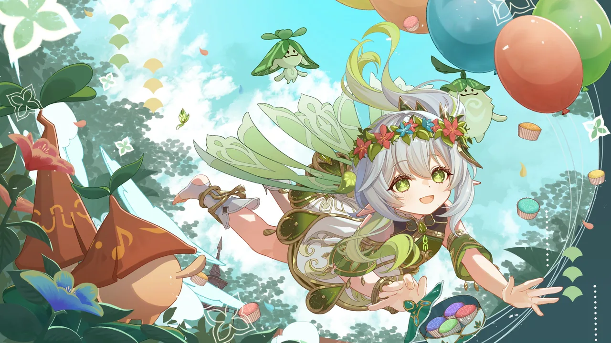
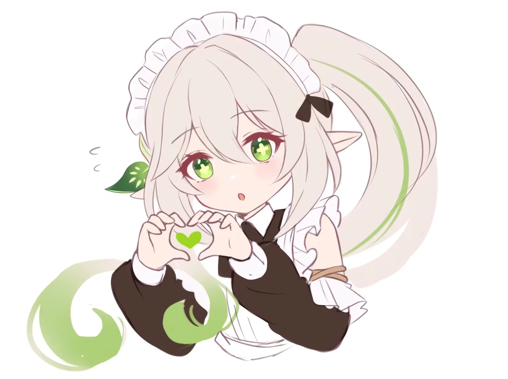

01
五个月后，我回来把这个空壳填上了
五月的时候我以为卡住我的是代码。其实只是没有人替我按最后那一下，然后我就再没打开过它。
Personal Archive · Since 2026
AI、剪辑，以及一些不值一提的碎碎念。所有东西都先写在 Notion 里，然后流到这里被收好。
五月的时候我以为卡住我的是代码。其实只是没有人替我按最后那一下，然后我就再没打开过它。
记不住不是因为笨，是因为没人告诉我这几个键为什么长在一起。把逻辑补上之后，手就自己动了。

它会很确定地告诉你"已经完成了"，然后你打开一看——空白。判断它有没有骗你，得靠截图，不是靠它的语气。

以上三篇是 样式示例，用来给你看排版和配图的效果。
真实文章会从 Notion 里流进来 —— 你在 Notion 写什么，这里就长什么。
另外：Lab 里搬来了那个水下混响效果器 —— 丢一首歌进去，在浏览器里就能变成「沉在水里 + 大厅混响」。